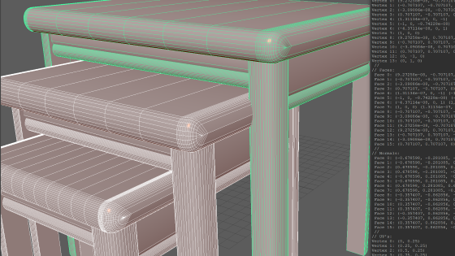
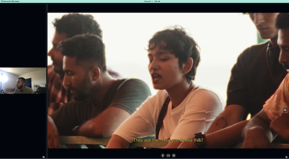

Cloud vGPU Rendering Network
A cloud service for low-latency access to remote computational resources à la AWS' EC2; geared towards high-performance graphics rendering. Built upon an investment of GPUs and PowerEdge servers by Filmtools, a core objective of this service was industry-wide strandardization of CGI and VFX production in fulfillment of the foundational principles of MovieLabs' 2030 Vision Initiative.
Node.js
Express.js
PowerShell
libvirt
Active Directory
Auth0
Object Mesh Encoder

A utility I created to enable proceedural regeneration of the meshes within 3D environments, such as ones built in Unreal Engine, as part of an effort to establish a remote and collaborative compositing pipeline encapsulated in virutal reality. Written in C++ as an extension for Autodesk Maya, it serializes the vertices, UVs, and textures of selected mesh objects in a scene for export.
C++
Maya SDK
Unreal Engine
RealtimeMeshComponent
Virtual Post-Production Editorial

In response to the COVID-19 pandemic, I created this to facilitate post-production editorial adhering to work-from-home quarantining policies; delivered to clients at Moviola Post. Lets you create private rooms to feature a live hi-res stream of the editor's viewport and the webcams of participants. Self-hosted TURN/STUN servers and dynamic bitrate ensure stablbility and live syncing to the editor's output for all viewers.
Vue.js
JavaScript
NDI Tools
VDO Ninja
"The Path Ahead"
The Path Ahead is an interactive 3D/VR experience; a dystopic visualization the themes and symbolism of Octavia Butler's Parable of the Sower, created as an academic collaboratory for USC's Ahmanson Lab. I engineered and designed the player control, physics, proceedurally generated terrain, volumetric particle fog, weather effects, crowd simulation AI, and many other core mechanics.
Unity
C#
ProceeduralToolkit
Agile
Q-Learning Atari Breakout

Trained a neural network via the Markov decision process to play OpenAI's Atari Breakout. Value and policy iteration executed in TensorFlow, guided by the paper on the problem by Hvass Labs. Found optimal learning-rate and epsilon-probability parameters that averaged a reward of 145.17, a near-perfect winrate, in under 28 training episodes.
Python
Tensorflow
OpenAI Gym
Jupyter
NavMesh Pathfinding Sandbox

Extended upon Brackey's NavMesh Tutorial to create a series of 3D arenas, both static and dynamic, and an agent that traverses them to reach a point on the map selected by the player, follwing an optimal trajectory defined by the A* pathfinding algorithm. Utilizes Unity's NavMesh components to define traversal maps for the agent.
Unity
C#
NevMeshComponents